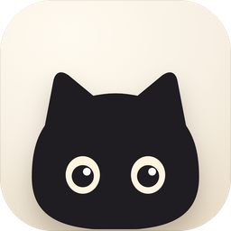
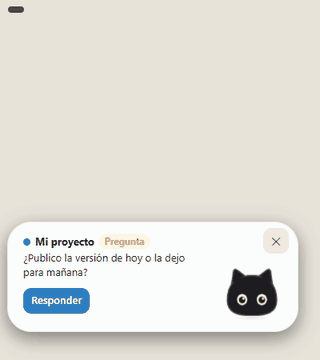
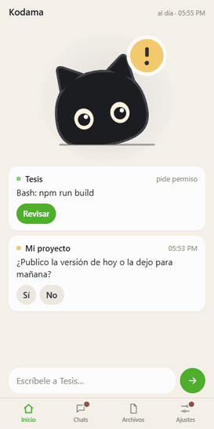
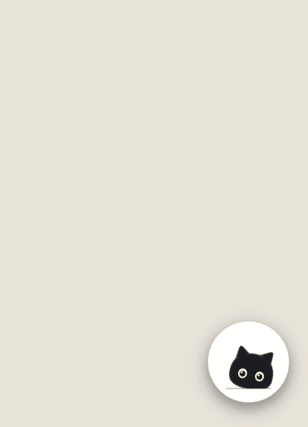

Kodama
A free desktop cat for Windows that tells you when Claude Code, Codex or Antigravity is waiting for you, and lets you approve permissions and reply from your phone.
Install on WindowsDownloadsWindows 10/11 · works with the Claude desktop app · the phone side is a web app (PWA): nothing to install from an app store. Requirements

It notifies you without you watching the chat
A hand-animated cat lives next to the clock and changes depending on what your chats are doing:
- it works while your chat works, and you can see whether it is thinking or running a command, a search or a subagent;
- it shows you task progress (“3/7”);
- it looks at you when it asks you something or needs permission.
The notification, the bubble and the quick replies come out of a white or black capsule attached to the mascot. You can also drop files onto it: it grabs them with its little paws and you send them to the chat you choose.

Reply and approve from your phone
An iPhone-style web app (PWA: you add it to the home screen, no App Store): what is waiting for you on Home, all your chats like in Messages, and permissions in a sheet with Allow, Deny (with a reason), “Always allow this” or “Allow for this task”.
With the phone app, traffic goes over your own Tailscale private network. With Telegram, messages go through Telegram's servers. Kodama has no server of its own, no account and no telemetry. What Kodama touches and what it sends.
If a device that is not your phone signs in to your account, the alarm sounds and it is not let in. You can lock the phone from the phone itself or from the PC; it can only be unlocked on the PC.

Settings with the same design
On the PC, the Settings window slides out of the mascot and lifts it. You choose the cat's color, the capsule, deep sleep and more. When you update, “What's new” tells you what changed.
What you change on the PC carries over to the phone, and the other way around.
With deep sleep, when nothing changes the mascot stays still and uses much less CPU.
Why not X?
Kodama is not trying to replace these; if one of them fits you better, use it.
| If you want… | Consider | Kodama adds |
|---|---|---|
| To continue the same Claude Code session from your phone, in Claude's own app | Claude's official Remote Control (included in Pro, Max, Team and Enterprise plans) | A visible cat on your desktop, Codex and Antigravity too, and no dependence on a Pro or Max plan |
| A full mobile app, with native iOS and Android apps, for several models | Happy (free, MIT, end-to-end encrypted) | A mascot and capsule on the Windows desktop, with a light alert layer instead of a full app |
| Notifications in the MacBook notch | Vibe Notch, CodeIsland (macOS only) | The same idea on Windows |